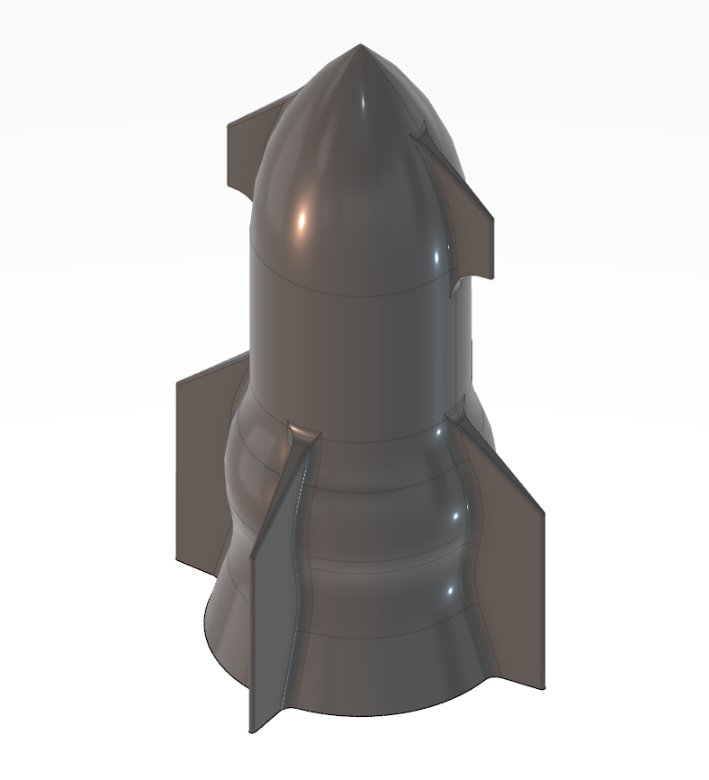
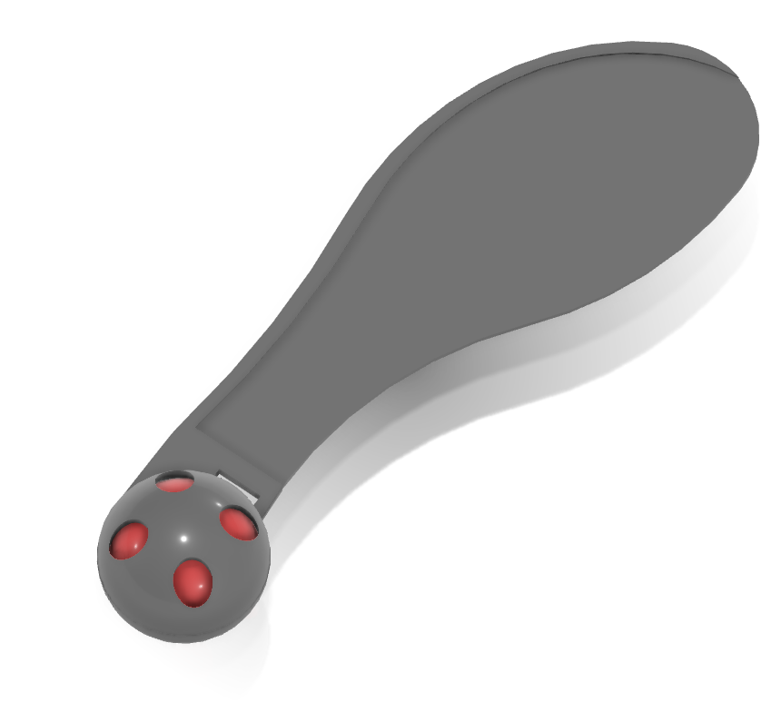
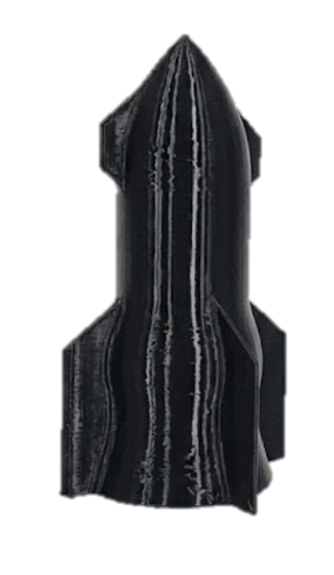
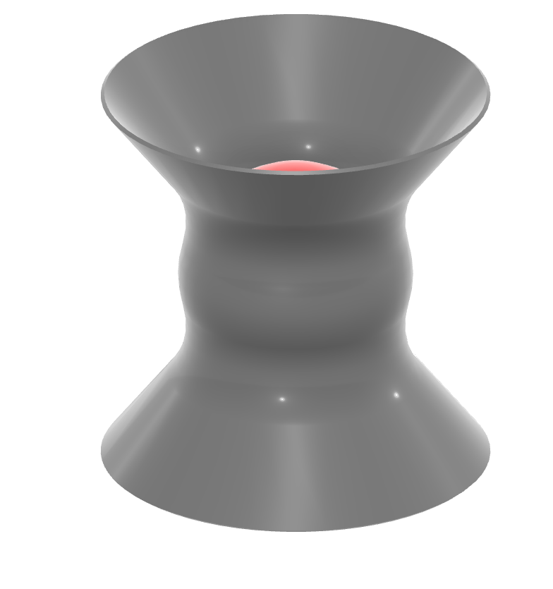
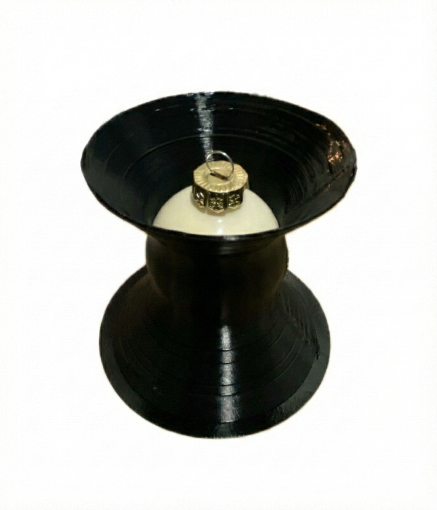

Engineering Challenge
Design and print a TPU 95A capsule that protects a 40 mm glass ornament in drops above 4 m, using no adhesives or external damping materials while minimizing mass and build time.
Additive Manufacturing · DfAM
From a rocket-inspired concept to a 10.3 g competition prototype
A four-person design-build-test project focused on protecting a fragile glass ornament during repeated drops, while minimizing capsule mass and FDM printing time.

Design and print a TPU 95A capsule that protects a 40 mm glass ornament in drops above 4 m, using no adhesives or external damping materials while minimizing mass and build time.
The Challenge
The capsule had to protect a fragile 40 mm glass Christmas ball during vertical drops exceeding 4 m. Ball integrity represented 50% of the competition score, with capsule mass and G-code printing time contributing 25% each.
The design space was deliberately constrained: TPU was the only permitted material, external dampers and adhesives were prohibited, the build volume was limited to 200 × 200 × 200 mm, and each part had to print in under six hours.
Concept Exploration
Rocket Concept

Samara Concept
Iterative Development
The first Rocket prototype successfully protected the ornament and confirmed the monolithic snap-fit strategy. At 21.05 g and 2 h 30 min, however, its fins and pointed body imposed an avoidable mass and time penalty.
The concept evolved into an axisymmetric Hourglass with two flared impact zones and a protected central cavity. Continuous circular toolpaths improved print consistency, while the flexible double-undercut snap-fit retained the ornament without a separate closure.
Each printed configuration was repeatedly drop-tested. Wall thickness, slots and a Voronoi-style shell were compared; the reduced-wall Variant A was selected because it preserved reliable protection while cutting both mass and printing time.


Final Prototype
Mass
Print Time
The final capsule completed all three competition drops with the glass ornament intact. The team finished in the technical Top 5 and placed 3rd in the design ranking.

Methods & Tools